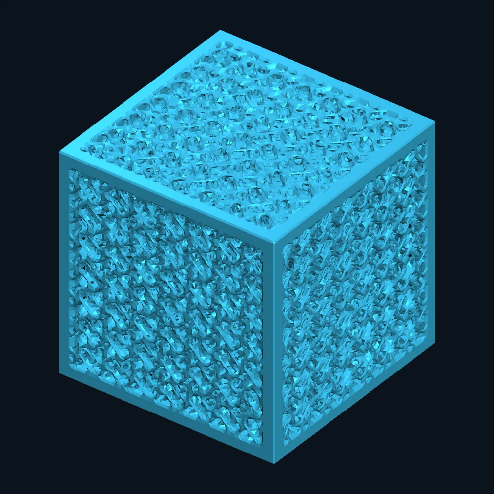
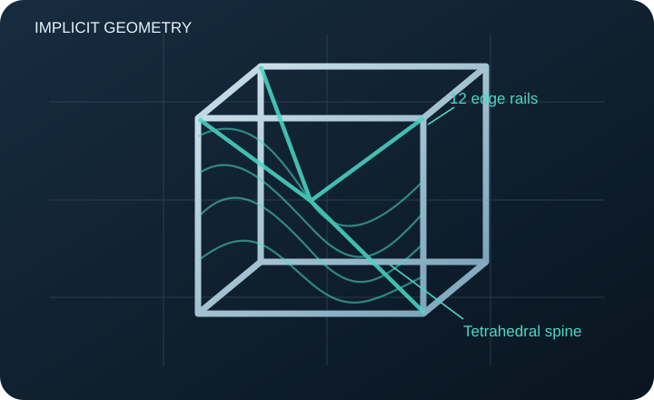

01
◎
Graded gyroid core
A continuous implicit-sheet architecture whose nominal pitch and material threshold vary with cube-shell position.
A reproducible, three-dimensional architected cube combining a graded gyroid lattice, tetrahedral support paths, and an exponential reinforcement field named NanoGap.

FIG. 01 / ORIGINAL DIGITAL GEOMETRYThe existing v1.0 project specifies a cube geometry and supplies model files and source code. Its mechanical performance still requires matched-material simulations and independent physical tests.
A continuous implicit-sheet architecture whose nominal pitch and material threshold vary with cube-shell position.
Four internal branches directed toward alternating cube corners, joined through a central node.
An exponential proximity field increases the local implicit-surface thickness parameter near selected support paths.
Twelve modeled edge rails frame the 63.5 mm cube and unite with the lattice through implicit-set operations.
The physical-object photograph and computer-generated STL rendering are presented separately so visitors can see exactly what each image establishes.
Photograph shared with the MIT researchers in a November 11 follow-up email. Independent print metadata are not yet available.
The documented CAD mesh is distinct from the photographed print. It contains a graded gyroid and framing system.
Provenance matters: an STL and photograph do not establish a qualified print process, resin properties, impact performance, or cube-to-photo identity. See the test protocol for the measurements needed.
The geometry is constructed using several mathematical fields, then assembled into a single printable surface.
Map position using the Chebyshev radius, giving cubic rather than spherical grading shells.
Generate the gyroid with a spatially varying nominal pitch and reinforcement threshold.
Locate spine proximity and apply the exponential NanoGap term.
Union supports and frame, clip to cube bounds, and convert the field to STL via marching cubes.

These expressions are transcribed from the documented v1.0 generator and original JSON manifest. All lengths and distances here are in millimeters.
The normalized Chebyshev radius, clipped to [0,1], controls radial grading.
Nominal pitch decreases from 14 mm at the core to 8 mm at the outer shell.
A position-dependent level-set thickness parameter—not a direct wall thickness in mm.
Here d is the distance to the nearest tetrahedral support branch, in mm.
The coupling raises the gyroid level-set threshold near the internal supports.
With k = 2π/P(r), the gyroid sheet is defined by |G| ≤ τeff, united with the spine and frame.
Important numerical caveat: because k varies spatially, the realized local phase period need not equal P(r). Along the dominant cube-axis direction the analytical period is P(r)2 / [P(r) − rP′(r)]. This grading implementation needs a convergence study before quantitative structural comparisons.
A locally computed visualization derived from the documented equations. This is a 2D slice of the gyroid implicit field, not a simulated stress or strength prediction.
Adjust the cross-section and the local radial/distance parameters to examine the mathematical quantities.
Research credibility depends on separating design evidence from mechanical claims. The current repository intentionally preserves that distinction.
63.5 mm CAD envelope, five STL outputs, published project parameters, original generator, an STL render, and a photograph of a printed cube.
The high-resolution model reports 73,683 mm³ of solid material vs. 59,222 mm³ in the standard mesh: a substantial discrepancy to investigate.
No supplied controlled stress–strain results, impact-force traces, standardized defect tests, independently verified print properties, or cross-study strength ranking.
Use matched material, specimen dimensions, manufacturing process, and actual solid fraction across AXEZENT and reference architectures. Start with mesh and print-quality checks before conducting compression, impact and seeded-defect trials.
Read full test protocol ↗Download preliminary models and documentation. The original 63.5 mm master and additional STL variants were shared directly with the researchers; large source designs are not mirrored on this public Pages site.
Original smaller printable geometry for fabrication screening, not for direct cross-size strength comparisons.
STL · 63.5 mmSeparated structural edge-rail component from the archived v1.0 model set.
PDF · TECHNICAL NOTEDefinitions, design intent, known limitations and evaluation questions.
PYTHON · SOURCEReproducible implicit-field implementation. Historical embedded labels remain unmodified for provenance.
JSON · PARAMETERSNominal dimensions, field parameters, and reported mesh properties.
JSON · AUDITHigh-resolution mesh measurements and analytical phase-period checks.
Please review research-use and licensing information before replicating or redistributing designs. Public visibility does not imply unrestricted commercial reuse.